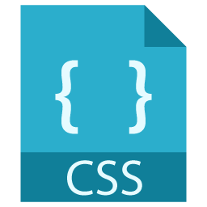
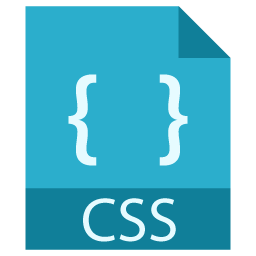

Iniciei os estudos de desenvolvimento web no dia 08/03. Começamos aprendendo os comandos fundamentais na utilização do terminal no UNIX e Github. Nessa caminhada de três semanas, após muito esforço e exercícios realizados, formamos conhecimento para desenvolver páginas web com HTML e CSS
 
